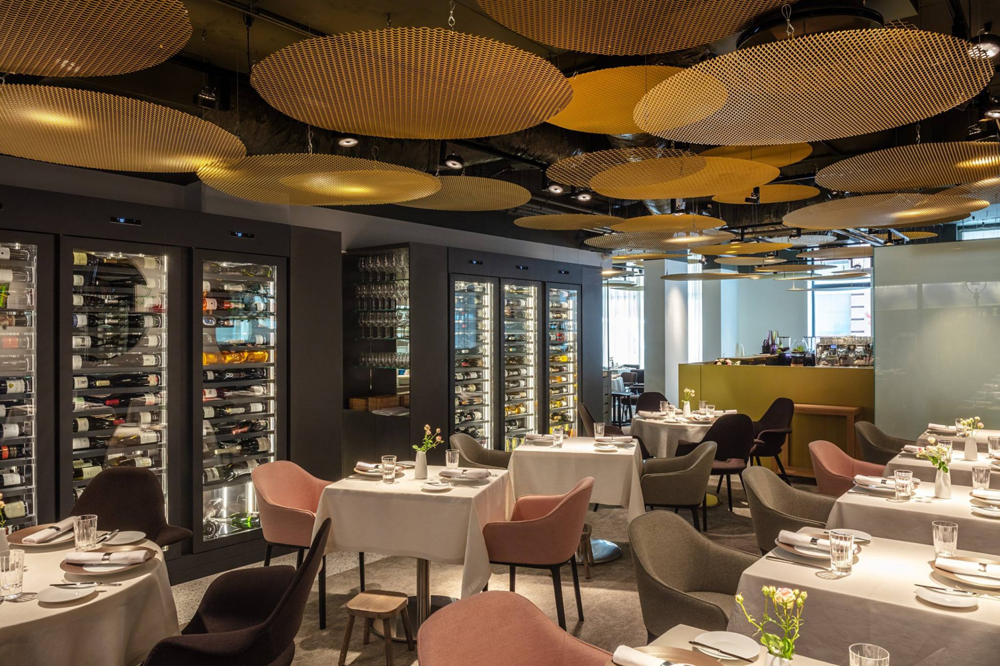
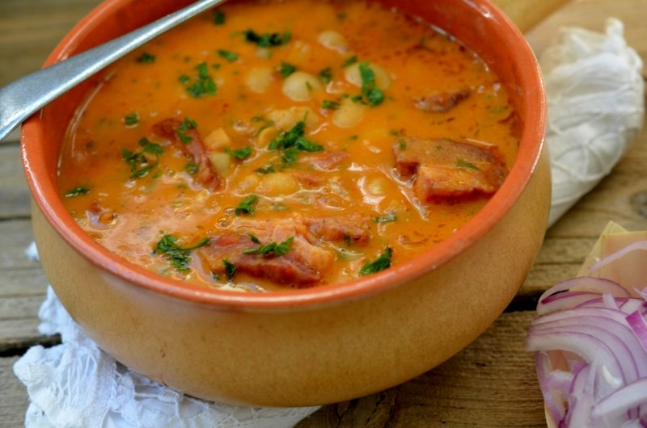

Az étterem belső tere csillogó kandeláberekkel és lágy fényekkel várja vendégeit, amelyek kellemes és meghitt légkört teremtenek.Az étterem néhány asztalánál impozáns kilátás és tágas panorámaablakok nyújtanak lehetőséget, hogy a vendégek élvezhessék a város vagy a táj szépségét, miközben ízlelik az ételeket és élvezik a társaságot.A modern és stílusos bútorok és dekorációk harmonikusan egyesülnek az étterem belső terében, létrehozva egy elegáns és kifinomult atmoszférát.Az étterem belső terében elhelyezett intim asztalok és luxus kényelem ötvözete tökéletes helyszínt teremt egy romantikus vacsorához vagy egy exkluzív üzleti találkozóhoz.Friss kevert saláta ágyon fekszik, gazdagon megszórva szezámmaggal és pirított tökmaggal. A tetején kifőzött tojás szeletekkel és friss, ízletes paradicsomkarikákkal. A salátát finom olívabogyók és házi készítésű balzsamecet öntet teszi tökéletessé.Száraz vöröslencsés pita különleges, rántott húshoz hasonlító töltelékkel, amelyet körít a ropogós zöldségekkel és a fűszeres jalapeno mártással. Az ételt friss zöldfűszerekkel és pirított szezámmaggal szolgáljuk, hogy az ízek teljesen kibontakozzanak.Szárazra sütött karajszelet, melyet ropogósra sütünk és friss salátával tálalunk. Az étel tökéletesen kiegészül a pikáns foghagymás-kapros öntettel, mely fokozza a hús ízét és frissességét. A különleges összeállítás friss zöldségekkel és zöldfűszerekkel garantáltan egy ízletes és egészséges ételélményt kínál.

Egy gazdag, laktató bableves, melyet füstölt hússal és friss zöldségekkel főzünk. A krémes és ízletes leves tökéletes egyensúlyt teremt a szaftos hús és a friss zöldségek között, miközben a füstölt ízjegyek mélyítik az ízélményt.
Ha további képekre és videókra vagy kíváncsi, tekinsd meg Facebook és Instagram profiljainkat